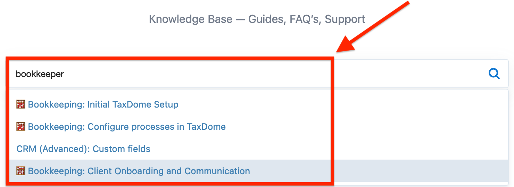

The TaxDome Help Center is a knowledge base for learning about TaxDome processes. It is designed to support you in using the product effectively, from installing the TaxDom application to advanced operation with it.
The default language for the TaxDome Help Center is English, but you can switch it using the list on the right below.
The start page displays multiple cards and a search bar. Click a card to open a page containing links to more detailed information with instructions (including videos), documents, or templates.
Once you click a card on the start page, the sidebar panel appears, displaying a list of topics.
If you’ve already installed the TaxDom application, go to the Getting Started page, where you can find an onboarding checklist, get help with signing up, and etc. The onboarding checklist guides you through exploring the TaxDome workflow.
There is a button to sign in into the application on the left above.
To search for specific information use the search bar on the start page or on the sidebar panel. As you begin filling out the search field, a list of suggested topics appears.
